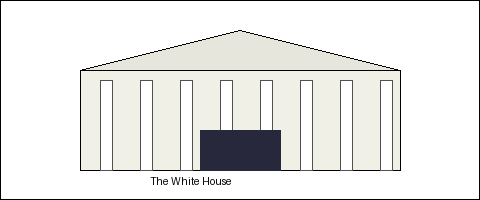

http://www.whitehouse.gov/
Click a region of the picture, or use the text links below.
The White House is pleased to offer an interactive citizens' handbook on the World Wide Web. Use the sections below to learn about the President, the Vice President, the First Family, and the Executive Branch.
Executive Branch |
The First Family |
Tours |
What's New |
Publications |
Write the President |
This Interactive Citizens' Handbook is an experiment in government on the Internet. If you have trouble reaching a page, try again later — the Net is busy!
Reconstruction based on the first White House website (launched October 1994) and NARA Clinton White House Website Version 1 structure (image-map navigation: Executive Branch, First Family, Tours, Publications, What's New, Comments).